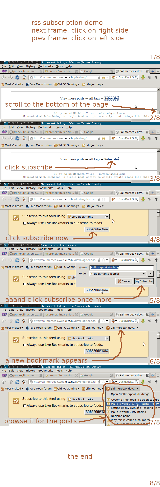

sometimes an animation can replace 1000 words, as the saying goes. the problem is that i hate animations. they can be very distracting. it is hard for me to read text if something else is jumping on the page. and even if you make the animation stoppable, i still have problems with it. usually the animation does not go with the speed i want it to go. it is either too fast or too slow. and while the animation is progressing, i cannot afford to look away since it might mean that i miss some key frame. sure, i could rewind, but i have yet to see a control bar that has the right precision and responsiveness for me. and i have not even talked about how cpu intensive most animations are. i think 90% of the time animations can be replaced with some smart text or annotated screenshots. and i think 90% of the remaining 10% can be replaced with very lightweight slideshows. allow me to demonstrate. i have seen the following gif on a friend's blog demonstrating how to subscribe to his blog:

here's how i would replace it with a non-intrusive slideshow (requires javascript):
[a slideshow will appear once javascript does its magic.]
and this thing is not very high tech. you need very little javascript for that, just look into the source of this page. i have generated the above slideshow from frames.png. you configure the javascript with the picture and the number of frames and it automatically shows only the relevant frame. thanks to the annotations, i think it is easier to follow what is happening. and frames.png is smaller than rss.gif (119 KB vs 212 KB). also notice that this solution degrades gracefully. suppose the user does not have javascript or a gif player (e.g. browsing on a kindle). they can still look at at the individual frames of the slideshow and make sense of the content! overall i think this a more user friendly alternative to animations.
{kind=link}